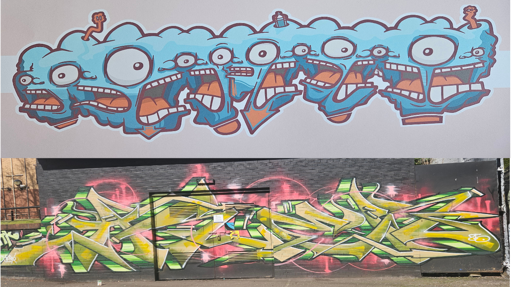
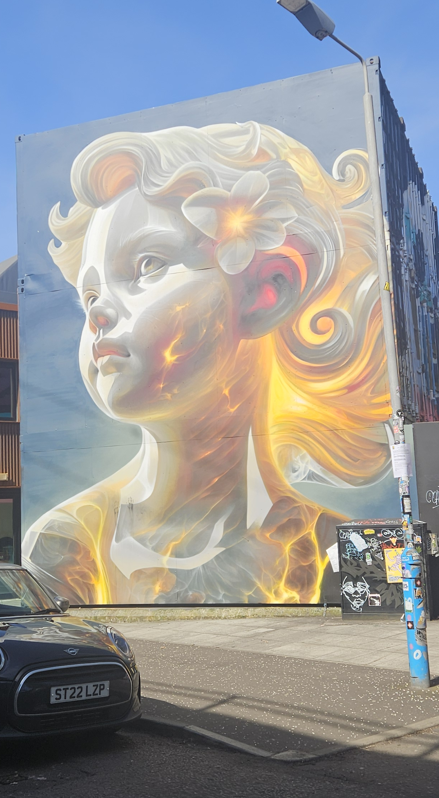
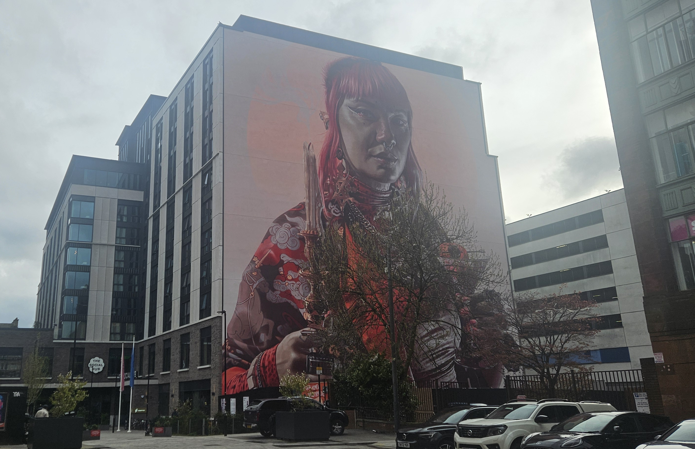
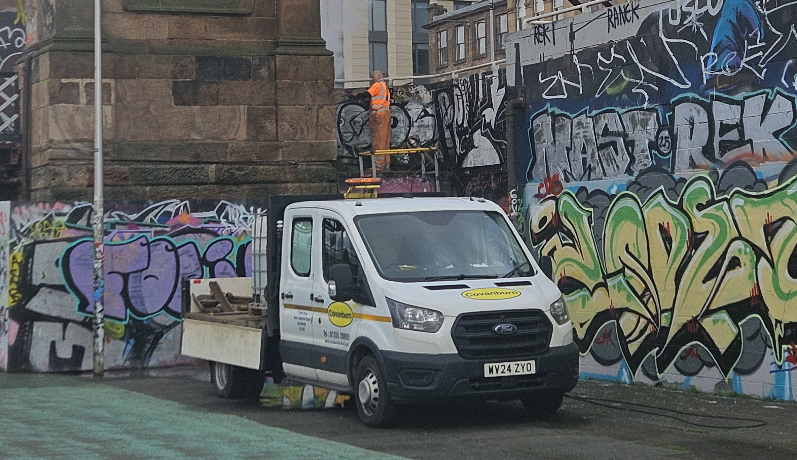
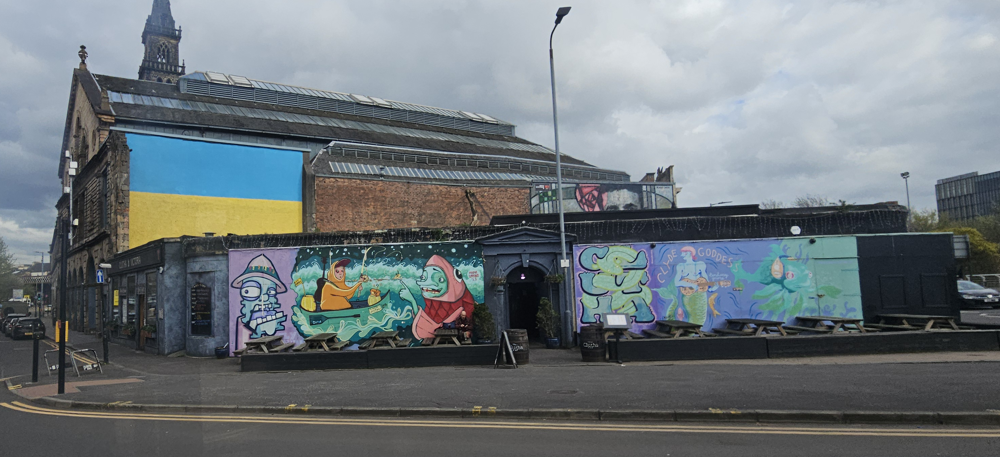
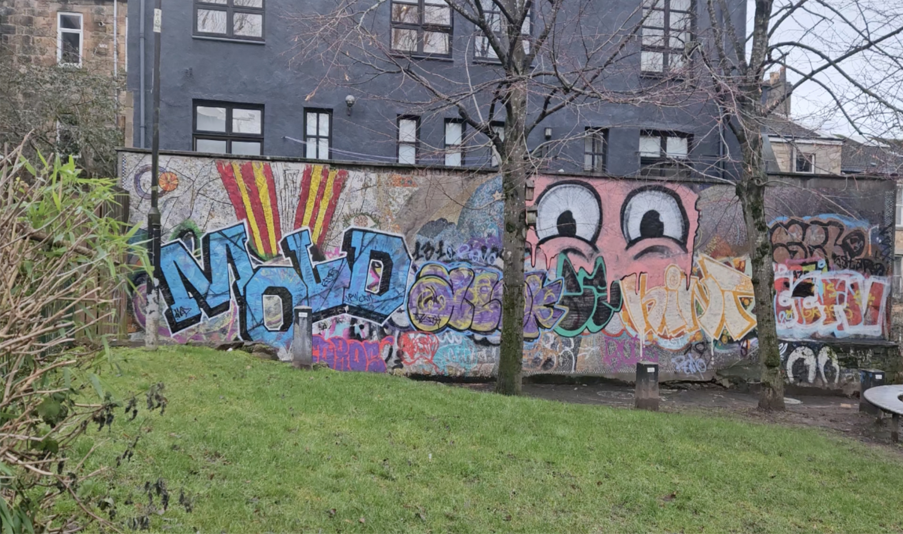

If someone asked a graffiti writer where a location might be in Glasgow, they would say it was beside a certain tag or artwork, street artist OhPanda says. It’s like their own map. Panda grew up in Paisley where he saw graffiti and street art, and thought it looked cool.
As I speak to Panda in Grateful Gallery, a pristine shop tucked in the sloping Garnethill lanes, I reflect on my first memories of Glasgow. The large wall painting on the side of the Graham Hills building and visible from the steep North Portland Street that strikes fear in every Strathclyde student’s heart, Panda’s exceedingly recognisable ‘Big Heids,’ or even colourful letters in the city centre tucked in dark alleyways.
Former and current Strathclyde students featured on the University's campus
Rolling into the Scottish spring, Glasgow’s walls seem brighter than ever, and I find myself looking at artworks more. This city can showcase a diverse range of art styles across many forms, but only if you look closely.
What's the difference?
Graffiti art in a general sense is “words or drawings, especially humorous, rude, or political, on walls, doors, etc. in public places.”[1] It’s done in sketchbooks and on walls where it’s usually sprayed without permission.[2]
“Mark-making without a commission or permission would always have been seen as a violation or as iconoclasm” says Clare Willsdon, Professor of History of Western Art at the University of Glasgow.
Murals are also made on walls or ceilings, but usually different because they are legal, accepted or allowed.[3] Professor Willsdon elaborates, “The big public-building commissioned mural would typically involve the artists having to submit designs for approval by the patron or donor.”
The nuances of graffiti, however, run deep. Content matters just as much as context and according to Brian Evans,– Professor of Urbanism and Landscape at the Glasgow School of Art – their relevance in the message of art is equal.
“The easiest way to describe it would probably be [that] letter-based stuff is graffiti. Do you have a tag?” asks Panda.
“I identify as a street artist,” he points out and I get the sense that people can mistake graffiti and street art to be similar, if not the same type of art. Artists from a traditional graffiti background often joke that street artists can’t write their own “name.” His ‘Big Heids’ are exaggerated faces with big, round eyes and a lower jaw jutting out, coming in every colour combination possible; a significant deviation from the block letters or ‘wild style’ of graffiti.

OhPanda’s Big Heids [top] and wild style graffiti art near the Yorkhill underpasses [bottom]
I was here!
The office of Gaz Mac, Studio Director of Yardworks, is surrounded by indescribable amounts of vibrant artwork on the walls of the SWG3 yard.

A wall at Yardworks from its festival in 2025
“This is generational from ancient Europe, Ancient Africa, Ancient Asia,” he says.
Yardworks started as a simple arts initiative, rising into a creative programme recognised and respected globally. It’s championed the best of Glasgow graffiti and pulled artists from across the globe to paint in Glasgow, hosting a massive annual graffiti festival.
Official reports of archaeology in caves like Lascaux, France and Altamira, Spain talk about “graffiti-like scenes” of sex and hunting that feature among visuals of animals and human stick-figures.[4]
Academic literature refers to, the negative handprints from prehistoric times, or names (tags), handprints, portrait sketches etc. as personal identifiers in history.[5] While debate on what is and isn’t graffiti [6] is just as rife as conflicts over whether this art should be legal or not, these personal identifiers tell us about the hand responsible for making the art.
Despite prohibitions on inscriptions – names, personal symbols and images – at these sites, ancient graffiti can be found on Roman graves, medieval churches or long corridors of Pompeii. [7]
“The language and style of graffiti can reveal different levels of literacy, local dialects, common forms of orthography or the relation between oral and written languages,” says Polly Lohmann, the author of an academic paper studying historical graffiti. [8]
This instinct, it seems, recurs throughout history. Glasgow is not new to this phenomenon. Atlas Obscura reported on “vandalistic inscriptions” dating back to the early nineteenth century, at the Cathedral of St. Mungo or Glasgow Cathedral, a combination of names, initials, dates and a series of sentences.[9] While some simply choose to say, “Die Wee Must”, others have carved out combinations of hymns, poem or Bible excerpts. [10]
Inscriptions etched into the stone of the Cathedral of St. Mungo
Professor Willsdon explains these types of inscriptions were common for churches. Permanent inscriptions on buildings that were meant to endure through the ages were thought to protect the writer – “The text written in the holy building would acquire an almost talismanic power.”
Historians speculate that graffiti in chalk or charcoal may have littered ancient buildings but were likely washed off by the elements, much like how modern graffiti and murals are removed or painted over. Panda thinks the impermanence is good.
He says, “It encourages people to get better.”
Subway Art
Conzo Throb is another Glaswegian illustrator, street artist and co-owner of Grateful Gallery, along with artists OhPanda and graphic designer Ciaran Globel. He is best known for his mural of beloved Scottish actor, Billy Connolly naked, wearing bright yellow boots at Nelson Mandela Place in the city centre with Globel. Conzo’s style is best described as vibrant interpretations of cultural symbols and Scotland’s isms, like ‘Did ye aye?’ or ‘Taps Aff!’
The signature heart characters of Glasgow artist Mul outside Grateful Gallery
"Drawing the characters generally started off around 2004 when I was in school. I was always into art, so my teacher showed me a book called Subway Art,” he tells me.
The book Subway Art, published in 1984, contained photographs of graffiti on New York subway cars, thought of as the Bible of graffiti. Among many others, Conzo felt enthusiastic about the art he saw in this book. Originating in New York, the style grew alongside hip-hop music and dance forms like breaking.[11]
While the graffiti before 1965 was gang-related with members interested in marking territory on walls, it was separate from the writing of the 70s and 80s. “Dispossessed young people” were making art out of frustration and boredom. [12] Writers, as they prefer to be called, like Taki 183 wrote their name everywhere. Experimenting with style and size, these youth chose subway cars as their ideal medium since the trains would travel – and thus display their name – all over the city. [13]
Yardworks boss Gaz Mac grew up in Govan and at twelve years old, was exposed to graffiti. But the chosen mode of transport for young boys here were the backs of old corporation buses. Mac wrote for the Young Tiny or the Young Teens, a crew of boys who would tag big Ys in a sans-serif font style.[14] Housing estates and an abundance of drugs is the setting he describes. He was born in what he called a jilted generation, with “Margaret Thatcher coming into power,” and people losing jobs in major Glasgow industries – shipbuilding, coalmines, steel plants.
Mac stood out in his younger years, adopting hip-hop culture among the punks and rockers of Glasgow and making it his own. He’d travel down to Manchester or Liverpool to spray paint.
“Every now and then I'd meet somebody. At that age, nobody took you serious.” The taunts only made Mac more determined.
“The more you done it, the better you got. The more respect you got.”
Since graffiti is (or was since the legal status of graffiti is changing in cities like Glasgow) largely illegal, the act can be perceived as masculine by the boys that run in this subculture. They compare the daring endeavours, – a particularly hard-to-access train, or a stylish ‘piece’ in a big or visible spot – weigh the risks, respect the machismo. This is why boys may feel like they need to enact their masculinity – the boldness of graffiti and the risks with authorities that used to be involved – repeatedly, as “no sooner is it proved that it is again questioned.” [15]
The Lingo
The vocabulary of graffiti is as layered as the culture itself – a private language that marks insider from outsider, veteran from novice.
Tag
This is the easiest place to start, characterised by stylised names drawn with markers or spray cans, “the purest, simplest form,” [16] It’s a method of practicing line-work, form and more but the barrier of entry is low at this stage.
An array of tags at the S Portland Street Suspension Bridge
Crews
Often trusted friends, they are groups of writers who may practice spray cans, design and paint. [17]
A piece by DBA Crew at the railway arches near Yardworks
Throw-up
This is the aesthetic middle ground between a tag and a piece [18] and involves drawing simple, but larger outlines of their name. Experimenting at this stage allows writers to form a recognisable original style.[19]
A sketch of a throw up in wild style graffiti
Piece
Originating from the word 'masterpiece,'[20] they are large letters and/or characters and can be wildly stylised. [21]
A piece at the Cowcaddens underpasses by artists Mul, Guzler and Rowdy
Going over
Painting over another writer’s existing piece to partly or completely cover it. [22]
New pieces covering old ones at the Clydeside walls
Dissin'
Or as a proper Englishman would say, ‘disrespecting’. A term borrowed from hip-hop; it involves crossing out the work or writing derogatory comments beside it. [23]
A simple tag with a blue line running through the centre
Signpainting
Writers may even paint outside the subculture, for causes like AIDS awareness or signs for local businesses. [24]
What's in a name?
Artists choose to use pseudonyms or ‘artist names’ when they ‘tag’ their name or create larger ‘pieces’ around their name. The name is a personal identifier, “a source of fame and respect.” [25]
A huge artwork by Vues, Mags and Gray celebrating The Scottish Tattoo Convention
The lingo sets the graffiti subculture apart but also tells us of the hierarchy in which writers group together, battle it out with other crews on the wall or show such dedication the craft that the name eventually rises to ‘king’ status. The richest space for this subculture around Glasgow, at least in terms of variety and access to the public, are the legal graffiti walls.
The Glasgow City Council
Glasgow’s civic authority commissioned its first modern mural in 2008 to brighten up stalled sites in the city centre [26] with many more completed artworks popping up since. Their involvement with the street art scene has exploded with the establishment of the Mural Trail and Grant Fund, and legalisation of walls in the city for graffiti.
Professor Willsdon spoke of the emergence of mural art in Britain as a way of “communicating shared ideals and beliefs, and a sense of British aspiration and identity.” It was at a time when the 1832 Reform Act was enfranchised. Glasgow was also keen on using murals in the City Chambers to display their wealth and power, “as murals cost money and could be seen as a demonstration of taste or cultural sophistication.”
paperwork completed and meeting council members etc - so the City Chambers building was very much a centre of social and local identity and was traditionally 'open doors' for the Glasgow citizens' benefit,” she says. Much of the iconography Professor Willsdon, in her online talk called ‘Edward A Walton and the Glasgow City Chambers murals,’ describes paintings by the Glasgow Boys as the realistic portrayal of contemporary life in the city. They portray the Legends of St. Mungo, personifications of the Clyde, and scenes of modern shipbuilding on the Clyde.
In 2014, Glasgow city leaders felt the cityscape needed to be spruced up for the upcoming Commonwealth Games that year and started the City Centre Mural Trail, a walkable path with a huge range of artwork displayed along the way.[27] Murals aren’t always obvious[28] and others like ‘St. Enoch and Child,’ done by Australian-born Glasgow-based SMUG have been removed. The mural used to sit on a gable end opposite the modern-day St. Mungo on High Street and was removed by the Wheatley Group “as part of a wider capital investment programme being undertaken on neighbouring properties.” [29]
SMUG's latest Keeper of Light is a super-realistic, pink-tinted piece made with Yardworks and the Merchant City Community Council and scales 11 stories.

Keeper of Light mural standing high at the Social Hub
Panda says he has a gripe with the murals, “In the same time they were doing the murals, they were also spending the most amount of money in the UK removing graffiti.”
He’s not wrong about the hundreds of thousands of pounds the council spends on graffiti removal. A 2020 report by Structural Repairs UK found that the Glasgow City Council spent £649,914 removing graffiti, more than double the amount of the next highest spender – the Borough of Hackney in London. When asked to report on the number of incidents of graffiti, the council said 6885 but did not rank in the top 10 list of cities with the highest incidents of graffiti. [30]
One morning, I find Liam Goss of Covanburn Contracts Limited, a civil engineering and rail company, scrubbing off the graffiti high up on the S Portland Street Suspension Bridge near the Clydeside graffiti walls.

Covanburn employees removing tags on the suspension bridge
"We have some contracted in by the Glasgow City Council. We've been doing a couple of these removals. We're doing it all over Glasgow."
Using a special graffiti removing solution and a steam power wash, graffiti removal services can erase any sign of vandalism, although Goss admits it takes quite a bit of work. Services like Covanburn may see four locations a week.
As a street artist, Panda feels crackdowns on graffiti can stifle the culture. “If people were able to just go and paint, they'd do a tag and that would get painted over.” Even if the artwork would only be big graffiti pieces or big street art pieces, “You'd do something better. Eventually, you've got really cool artwork.”
Panda opened ColourWays, a Community Interest Company started in May 2020 to “support and promote graffiti and street art within Glasgow.” The company curates murals, hosts walking tours and street art and graffiti workshops with young people.
Panda thought, “Maybe if I start this social enterprise, I can create a little bit of a grey area.”
The Big Heids painter and gallery owner was involved in the legalisation of graffiti at pre-allocated walls in Glasgow. The City Council went ahead with a proposal for legal graffiti walls in three locations – Custom House Quay, the Cowcaddens underpasses, and the Riverside Museum and Yorkhill Underpass at the end of 2023. While the project began as a six-month pilot and despite residents around Cowcaddens feeling the brunt of the increasing stack of tags around them, [31] the walls have endured, with a mix of tagging, amateur throw ups and expertly created pieces showing up.
Panda tells me he still engages with the council and is invited to consultations, advocating for free and safe spaces for graffiti and street artists to paint their work.
But in recent times, he’s developed concerns that the Clydeside graffiti walls at Custom House Quay may be demolished. “When they were doing the consultations, asking the public what they wanted, they didn't show any photos of the graffiti walls,” Panda elaborates. He thinks this omission could be dishonest on the part of the council, with citizens losing the ability to voice their views on the graffiti walls. Panda seemed open-minded – welcoming, even – of the public’s honest opinions, good or bad.
“To be fair,” he says, “Getting a legal wall off them was crazy.”
Money, Money, Money
Professor Clare Willsdon looks at the modern mural trail as “consciously building, at least to some extent, on that heritage of Glasgow as an enterprising patron of modern art.”
Even if a mark on a wall isn’t official, the graffiti may not be valueless. “When a Banksy appears on a wall, those who own the wall may not like its style or content but have to recognise that it has value because of Banksy's reputation,” she says.
Professor Brian Evans asks, “Is Banksy art or graffiti? The arts establishment has now got so far as to consider that it is not only a work of art, but it's a tradable work of art.”
“What's the difference between graffiti on a bus and advertising on a bus?” he posits, “Graffiti is graphic art. So is advertising. Why is advertising acceptable?”
“Because it contributes to neoliberal economics,” he answers.
Graffiti, it seems, exists in the same capitalist reality as it’s adjacent styles. Murals and street art, to some extent, have a space within legal contexts to support monetary transactions. Whether the Glasgow City Council commissions a mural artwork or funds a project through their Mural Fund, or formerly public art evolves to be made and sold on paper, canvas and other merchandise, the value of graffiti, street art, murals or other public surface impressions increases when the question of money enters the chat.
An artwork commissioned to prolific Glaswegian muralist Rogue One created waves in Glasgow after the mock-up for a proposed mural on Elmbank Street was flagged as AI generated earlier this year. [32] According to the proposer, Derek Paterson from Balmore Estates Limited, the AI design will be refined to fit a Scottish feel (the AI image was seen to have a bald eagle which isn’t native to Scotland), asking the “keyboard warriors” to relax. [33]
But fellow artist Panda thinks Rogue doesn’t deserve the heat. “We live in a capitalist society, and these are commercial jobs,” he says. While some choose to remain commercial artists, – and companies do tend to prefer economically viable options – Panda cannot depend on technology alone.
“I still have to do my own work. I can't get AI to paint the streets for me.”
“What makes graffiti writers interesting as a place or people to study is, you might look at criminals circumventing security measures for a financial gain. Whereas graffiti writers are doing it for this sport,” says Panda, speaking to the subversive nature of traditional graffiti.
He thinks, “If all [society] values is that you go to work, you buy stuff, you consume, that doesn't really fill your soul in the right way. People seek out ways to nurture their soul…you end up with other people around you and build a community.”
Graffiti, along with street art and muralism, seems to be an individual pursuit, a tool for personal expression with characteristics of the art changing in different hands. Despite Gaz Mac’s tagging as a 12-year-old boy, the artist no longer creates artwork illegally. The Glasgow Council, too, continues its tradition of murals representing the common people and industries of Glasgow in its mural trail, albeit in misguided ways as many citizens of Glasgow see the proposed artwork for the AI mural.
The Clutha and Victoria Bar is another space bringing community together; a 200-year-old location that has become a Glasgow landmark, not only for its music but because of the crash of an errant helicopter in 2013 that killed ten people. [34]
“If all [society] values is that you go to work, you buy stuff, you consume, that doesn't really fill your soul in the right way. People seek out ways to nurture their soul…you end up with other people around you and build a community.”
The Clutha Bar
Among my different homes in Glasgow, the room with the best view looked over the Clyde. It’s easy to see how this river influenced its surrounding land. Alan Crossan, owner of the Clutha and Victoria Bar which sits on the shores of the river Clyde tells me how the bar was named after the boats that would ferry people up and down the Clyde.
“There was a lot of free wall space after the accident,” says Crossan, “I've covered up the old Clutha because I didn't want it to be looked at.” Crossan, determined to revitalise the bar, decided to get artists Rogue One and fellow graffiti and street artist, EJEK to paint the outside walls. [35]
“The first murals that we'd done was people who were in black and white,” Crossan recollects, “You had people like Stan Laurel, from Laurel and Hardy. Woody Goffrey, Spike Mulligan and various people like that.”
The celebrities had all been visitors of the bar in the past. A mural of Charles Rennie Mackintosh – done in a modern rendition of an art nouveau style with roses stylised as made on stained glass – still graces the upper wall of the bar, alongside a massive Ukrainian flag.

The outside façade of the Clutha Bar
When the Ukraine war started, Crossan recounts, “There was some graffiti on it. Bad graffiti.” So, he asked some painters to do the flag. “You can see that everywhere. And I've had Ukrainians emailing me, saying that it lifts their heart when they see it.”
The Clutha’s façade now features many Glasgow artists from many backgrounds, – street art, muralism, graphic design – a pastel-coloured theme running across them.
The bar is part of a Trust run by Crossan, running many programs – art, music and drama classes for kids, a pizza foodbank, a program called 'Power Over Poverty' covering the electricity bills of struggling families and more. [36] The Clutha Trust also funds art materials to schools that need them, and supports an artist called Maureen Rocksmoore. She works with children in schools; the troublesome ones, chosen by the school's management to have art classes.
“Troubled for different reasons,” she says, “Some were neurodiverse, some had difficult lives. You maybe have eight boys who are difficult all trying to learn how to behave with other difficult people which I think is really hard for kids."
She balances her time selling paintings and has a studio at the first floor of the Briggait, where she asks me to meet her. Her small room is filled with canvases. It looks over the Clyde, a birds-eye view of the Clutha also in view.
“That's the local that I would go to if I wanted a break, go for a bowl of soup or something. I got to know Alan and everybody and I remember just having a chat one day.”
The bar owner immediately decided to help Rocksmoore with art supplies in some schools. “The council pay me to work there but also the Clutha have helped fund projects,” Rocksmoore even tells me of an art exhibition hosted at the Clutha for Rocksmoore’s 10-year-old boys; other artists were invited to view artworks from the children on opening night complete with food and drink.
She describes the requirements of her job in education – she teaches them art, but daily activities come with dealing with concentration issues, anger-management, helping her kids with self-esteem or just listening to them. “I don't ask any open questions. I'm not allowed to do that. But quite often, when somebody's doing art, they'll just start telling you,” she says, “It's just a sign that they're really comfortable.”
Rocksmoore has seen children not attending school coming in to see her for art. “The attendance went up. And he was coming in because his elf-esteem was going up. For the kids, they know it’s something special.”
Her work is parallelled by youth initiatives and workshops taken up by other organisations like Mac's Yardworks and Panda's ColourWays.
Yardworks engages with 15 different primary schools in the area, in addition to running youth employability programs, providing bronze SQA accreditations – although Mac says the city council recently dropped their funding. [37] The charity boasts 100% young people turning to education after completing their employability program [38] and Mac seems proud to give back to his community.
“I never went to school. I wanted to be a bricklayer. I was fascinated by walls.” We joke about how Mac has ended up working on walls every day, “The only classes I attended was woodwork, metal work. Always working with my hands. I keep going back to my roots. My roots being graffiti letters and my name.”
Professor Brian Evans, a Glasgow School of Art faculty member, believes such programs are essential. “Engagement of young people in the city in any way is essential,” he says, “It's fundamental. Everybody needs a voice.”
In it together
Despite Glasgow’s deep history and warm population, it isn’t without its faults. The city has had many incidents of racist graffiti. In one incident last year, graffiti that said ‘Scots First’ could be seen in bright white lettering on a wall outside the Glasgow Central Mosque. [39] Issues have come in the form of vandalism at Partick Thistle’s Firhill stadium, with seats being left damaged and graffiti being written on seats and in toilets that were racist in nature. [40] The Glasgow Guardian has even reported of graffiti being left on the St. Andrews building on the University of Glasgow campus that read, ‘Kill the Chinese.’ [41]
“Everybody’s got their own code,” says Professor Evans. “My code's more general than that. Try to do no harm to people. No hate, no violence.” But he describes this fluid, non-official ‘code of conduct’ within the graffiti subculture as “honour amongst thieves.” The phrase seems ideal to describe the largely individual undertaking of morality in arts spaces. While understandings exist, – dissing another writer’s tags bringing trouble, churches and graves being off limits, going over another piece being warranted when the art on top looks better than the one below – not everyone seems to get the memo.
Even the Garnethill community, home to Panda and Conzo’s Grateful Gallery, found itself tired of the taggers at Garnethill park. One particular wall at this park, partially hidden by trees, was once known to host a mosaic mural. Today, the mural is almost completely hidden and covered by the random colours of various taggers and graffiti writers flitting past the site. Two Garnethill community councillors speaking to the Bell thought it made the place look unloved. The potential for a mural in a different part of the community also worried to the councillors; they were afraid it would be inevitably bombed by graffiti-ers. [42]

Tags and throw ups littered on a wall at the Garnethill Park
Still, Grateful Gallery enjoys the slow life of community-living. “People come to us,” says Conzo Throb. “People of all ages, up to their 70s coming in and telling you what this place used to be in 1965,” the Garnethill residents seem to have accepted the gallery owners into their fold. Elements of the gallery, like the wooden bench I sat on while chatting with the owners or the neon light sign featuring Conzo’s happy sun, were donated.
“There's definitely been that link of people wanting to help connect to making this place work for the rest of the years we're in here. It's cool," says Conzo.
Tags around Glasgow aren’t always easily accepted as a natural part of the graffiti subculture either. “It's ugly when it's not controlled,” Clutha owner Alan Crossan says. He can’t understand why it’s a fad or what joy graffiti writers may get out of it. But he does believe the writers have skills. “They need a direction in their lives,” he continues. Crossan’s reaction is to ask artists to come paint his walls. “Why don't you come in and paint a wall?” he says, “What you think is good-looking. Rather than go and spray somebody's door which is stupid looking. It makes a place look dirty whereas the art makes it look trendy.”
Panda, whose artwork is also proudly on display outside the Clutha, says it’s easy to forget the essence of graffiti and why someone may do it. He recalls painting at the graffiti walls Clydeside. “People were interacting with us and it's dead nice to see people interacting,” he recalls, “That's the point of this in a way.”
He isn’t wrong. The graffiti and street art subculture is designed to bring people together, be it through a graffiti wall, jam, festivals like Glasgow’s Yardworks, crews like Easy Riderz or the culturally inspired galleries, organisations and charities that have emerged. Even the Clutha, a site scarred by a freak accident, revitalised itself in the Glasgow ecosystem by painting its doors in colour. The bar sees success in its charitable endeavours, hoping to expand its annual street festival featuring Glaswegian food, music and art.
The Glasgow City Council’s Mural Trail is reported to have succeeded in its mission to bring in new and increased numbers of tourists, having realised that interest in street art is growing. The trail offers an off-the-beaten-path, alternative tourism to tourists that would prefer to explore huge murals. It has even won an award in ‘placemaking,’ given by the Scottish Arts and Business Awards in 2017. In 2020, Tripadvisor also recognised it as a ‘top attraction.’ [43]
Removal of artwork on the part of the City Council, however, can seem arbitrary at best and frustrating at worst. Panda has been vocal about his own artwork and that of other artists he had commissioned being arbitrarily taken down, without consultation of local communities. [44] He even spoke about a memorial mural taken down – painted close to where Grateful Gallery currently stands. The mural featured the character Charlie Brown and was made in memory of Jools Murray who committed suicide. “It was very annoying and frustrating because, why are you painting over that just because it looks like graffiti,” Panda tells me.
Throw up in memory of Jools
Wall art in this city has enjoyed a diverse and longstanding relevance. From the detailed 19th Century City Chamber murals Professor Willsdon studies, modern Council-permitted murals to simple and broken-down graffiti done in wild style, block or bubble letters, to the intuitively designed Glasgow characters like Billy Connolly, Glasgow’s choice in art is a loud expression of its unique identity.
Just like St. Mungo features repeatedly in 19th Century murals or modern renditions with the patron saint shown as a common man, there are many other quintessential Glasgow symbols that also refuse to vanish. Scottish actor Billy Connolly is a popular subject – from the BBC Scotland commissioned, Dixon Street gable end mural painted by Jack Vettriano to the (also BBC Scotland commissioned) John Byrne-based one just off Stockwell Street painted by Rogue One, although this mural has been removed.
Graffiti culture is seeing a revolution in recent times. Even with its own unique lingo and character, the previously illegal artform now enjoys legal status in areas like the Clydeside or Cowcaddens walls. Former writers like Gaz Mac are also seen to evolve with time – starting off as a bus driver sketching on the back of ticket rolls, Mac is now part of a global network of legendary artists.
Despite the city council’s hesitation in leaning into the new wave of unrestricted and unregulated graffiti and street art, the artists of Glasgow seem to be joining together to further the spirit of art. The workshops at Yardworks, Maureen Rocksmoore’s unique work in schools and the annual painting sessions outside the Clutha Bar is evidence. Graffiti, street and traditional artists in Glasgow continue to support their own and help the restless, growing and young generation understand the strengths of art. The children are intent on attending these art classes even if school seems boring, and Rocksmoore makes sure to teach her kids a multitude of life-lessons along the way.
Parallelling humanity, the graffiti-like nature of cave paintings rolls into Roman wall etchings and inscriptions. After years of studies in ancient graffiti, the vandalism rising in popularity in 70s and 80s New York retains an obsessive public nature. The tags of graffiti writers are almost always a made-up pseudonym, but writers choose to display their art in the most visible and ostentatious ways with the hope that their name can be the biggest and the best.
As Polly Lohmann argues, the personal identifiers involved in ancient graffiti are what makes the topic such an important element of human history to study. It tells us about the daily lives, wishes and dreams of our ancient brethren.
Tagging, graffiti writing and street art are hotly contested issues in Glasgow. Some like it and some don’t. Some like looking at the massive City Council murals while others think they’re getting boring. And as it remains, each individual seems to adopt a personal Code of Conduct, the limits to their comfort levels and the extents of what they consider right and wrong. Most, I would say, do draw the line at violence, hateful or unnecessarily careless vandalism.
And just like the abundant individualism in opinion, Glasgow’s artists have an abundant variation in style. The city has a diverse range of subject – popular Scottish characters, symbols and celebrities, the diversity of its common people and industry. The artwork speaks to the reasons it was created – some may want to cover up a mural turned ugly. Others may want to reclaim their identity, as the Clutha did with their outside walls. Many young kids seem to only want to be seen, shout their ‘name’ on the streets by making the biggest, baddest and most beautiful pieces of graffiti.
What everyone in this city may have in common is the instinct to express their identity in public and on walls.
As Professor Brian Evans told me, “There's something to be said for doing something constructive with blank walls.”
Glasgow Art Trail Map
Explore the locations featured in this story — from legal graffiti walls to murals and community spaces. Exploring on foot? You can open the locations on Google Maps. Just select a marker and click on the three dots.
6Ross, J.I. (2021) 'Stop giving the Neanderthals so much credit. Why prehistoric cave painting is not graffiti', Jeffrey Ian Ross, 12 August. https://jeffreyianross.com/…↩
14BALLCLASH (2025) 'Remember when young teams used to do the big serif "Y"s in their menshys/graffiti?', r/glasgow. https://www.reddit.com/r/glasgow/…↩
37Minors, G. (2026) 'Street art and youth advocacy converge at SWG3's 2026 Yardworks Festival', Glasgow Guardian, 7 April. https://glasgowguardian.co.uk/…↩
40Paterson, S. (2026) 'Racist abuse and vandalism at football stadium after match sparks investigation', Glasgow Times. https://www.glasgowtimes.co.uk/…↩